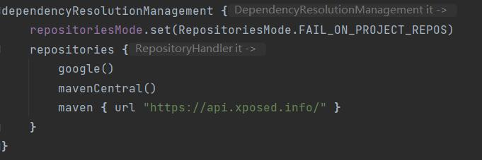

Xposed模块入门
编辑Mainfest文件
在AndroidMainfest文件中Application项中加入以下数据
<meta-data
android:name="xposedmodule"
android:value="true" />
<meta-data
android:name="xposeddescription"
android:value="xposed模块描述" />
<meta-data
android:name="xposedminversion"
android:value="82" />
插入以上数据的目的是使得Xposed框架能够知道这个apk是一个模块文件
加载jar包
1.手动添加：将jar下载到本地后自行添加。手动下载XposedBridgeApi-82.jar文件，拖放到“项目名称/app/libs/”，然后右键“Add As Library” 自行添加这个jar包。之后在build.gradle的dependencies目录下添加命令
compileOnly files('libs\\api-82.jar')
2.自动同步：如果网络情况允许的话，可以直接在gradle文件下的dependencies下添加：compileOnly 'de.robv.android.xposed:api:82'，这样可以免去事先下载jar包的步骤，需要注意的是随着jcenter仓库关闭，目前直接使用该配置gradle会报错，所以需要在settings.gradle配置文件中做如下配置：

添加入口点
没有添加入口点的xposed模块可以被xposed管理器识别，但是不可以启用，必须指明入口点，启用的方法也很简单：
在\src\main目录下创建assets文件夹，在该文件夹下创建入口点文件xposed_init，内容为编写的Hook类类名。
编写主要类文件
这是hook类代码的一个实例：
package com.huol.sswcrack;
import android.app.Activity;
import android.content.Intent;
import android.os.Bundle;
import de.robv.android.xposed.IXposedHookLoadPackage;
import de.robv.android.xposed.XC_MethodHook;
import de.robv.android.xposed.XposedBridge;
import de.robv.android.xposed.XposedHelpers;
import de.robv.android.xposed.callbacks.XC_LoadPackage;
public class Crack implements IXposedHookLoadPackage {
public void handleLoadPackage(final XC_LoadPackage.LoadPackageParam lpparam) throws Throwable {
if (lpparam.packageName.equals("com.qq.ssw1")) {
ClassLoader classLoader = lpparam.classLoader;
XposedBridge.log("Loaded app: " + lpparam.packageName);
Class clazz = XposedHelpers.findClass("com.qq.ssw.v2.splash.SplashActivityV2", lpparam.classLoader);
XposedHelpers.findAndHookMethod(clazz, "onCreate", Bundle.class, new XC_MethodHook() {
@Override
protected void beforeHookedMethod(MethodHookParam param) throws Throwable {
super.beforeHookedMethod(param);
Class mainActivity = XposedHelpers.findClass("com.qq.ssw.v2.main.MainActivityV2", lpparam.classLoader);
Activity activity = (Activity) param.thisObject;
Intent mIntent = new Intent(activity, mainActivity);
activity.startActivity(mIntent);
}
}); // 去开屏广告和不必要权限要求
XposedHelpers.findAndHookMethod("tencent.io.b", classLoader, "i", new XC_MethodHook() {
@Override
protected void afterHookedMethod(MethodHookParam param) throws Throwable {
super.afterHookedMethod(param);
param.setResult(true);
}
}); //破解会员
}
}
}